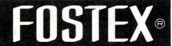
FOSTER(フォスター)/FOSTEX(フォステクス)
フォスター電機が自社販売するオーディオ製品のブランド。同社は古くからスピーカー等でオーディオにかかわってきたが、1973年に自社製品や当時扱っていた海外製品の販売会社として立ち上げたのが、「フォステクス」である。その後、「フォステクス」名義の製品が増え、ブランドとして確立した。
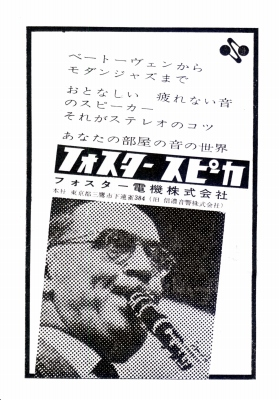 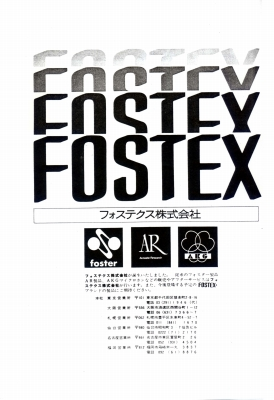
（左が1960年代の広告 右が1973年の「フォステクス」立ち上げ時の広告。当時ARの他、AKGのマイクを輸入していた）
同社は1960年台にはすでに「フォスター」名義で通常型のヘッドフォンを販売していたが、1975年より「動電型全面駆動方式」の一種である「RP(Regulated
Phase
)」方式を採用したヘッドフォンを販売し、その製品以降から「フォステクス」ブランドでの販売が続いている。
「RP方式」は他社の「動電型全面駆動方式」が渦巻状のコイルと穴が開いた円盤状のマグネットで構成されるのに対し、振動板上を折り返すように埋めるコイルと棒状のマグネットで構成され、かなり独創的な方式（＊）である。現時点（2021年6月）で国内で「動電型全面駆動方式」を通常に市販している唯一のメーカーである。また、2010年代に入り、海外製の動電型全面駆動方式が登場するようになったが、1970年代から一環として販売してきた稀有なブランドである。
また国内では数少ない現行のスピーカーユニット供給メーカーであり、1990年代にはバイオセルロース系の素材の振動板（バイオダイナ振動板）を使ったフルレンジユニットを販売した。そうした成果は自社ブランドでは生かされていないが、本体であるフォスター電機でのOEM供給で生かされている。(最近、限定モデルのmh256でバイオダイナ振動板を採用したようだ。）
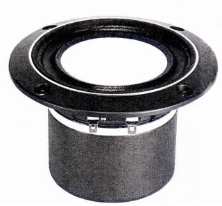
（バイオダイナ振動板を採用したBC-10。同時代のソニーはヘッドフォンやツィーターでしかバイオセルロースを使っていなかった。）
ヘッドフォンの型番についてはフォスター時代は「RCF」「RDF」を使用していたようだ。フォステクスブランドとなってからは「T」で始まる型番に切り替わった。フォステクスブランドの製品はみなかなりのロングラン製品であり、製品数はあまり多くない。
FOSTEX （フォステクス）の製品を以下のように分類する。（この分類は個人的な意見で、メーカーの分類ではありません）
�T.フォスター時代のモデル
�@1960年代の製品
1960年代は「RDF」型番のダイナミック型製品を作っていた。なお当時の製品には「群馬フォスター�梶v名義のものがある。
RDF-204 RDF-207 RDF-210 RDF-217
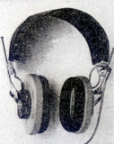
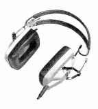
(左 RDF-207 右 RDF-210)�A1970年代の製品
1970年代に入り、「RCF」型番のコンデンサー型が登場した。
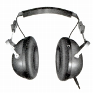
(RDF-218)（コンデンサー型） RCF-233
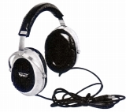
(RCF-233)
�U.フォステクスのモデル
�@第１世代のモデル
1970年代の製品群。最上位モデルのT50からデビューした。その為一部のスペック（感度、再生周波数帯域）は下位モデルのほうが優れている。T50にはヘッドバンドが異なるバージョンが存在する。なおT10、20は「Stereo
Suond YEAR BOOK」の記述を信じれば、一旦市販が中止し、87年に再発売されたらしい。
現時点で雑誌の記事や広告で見る限り、国産最初の動電全面駆動型はT50（1974年10月発売）のようだ。
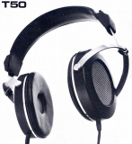
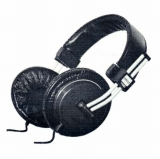
(左 T50 右 T20)
�A第2世代のモデル
1980年代中盤以降の製品。デザインは現行機（T50RPなど）とほぼ同じであり、ロック機構付きのL型ミニプラグを使ったコードも共通のものだ。しかしRPユニットは円型である。現行第3世代のRPユニットの形はほぼ正方形。T40RPは動電全面駆動型では珍しい密閉型。なおT20RPとT40RPではユニットの口径が違う。
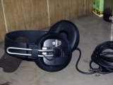
(T20RP)
�B通常のモデル
1990年代にデビューした非RP方式の製品。現時点（2010年1月）でも現役モデルである。
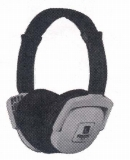
(T-7M)